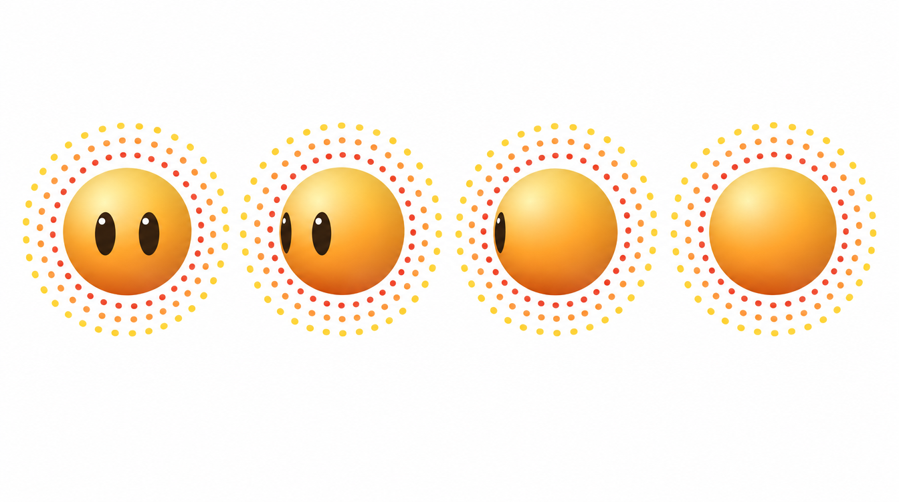
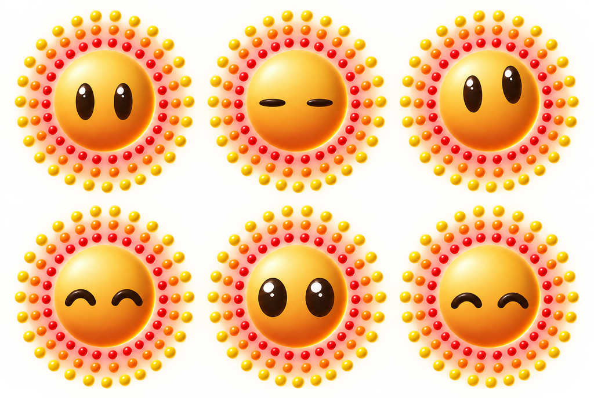
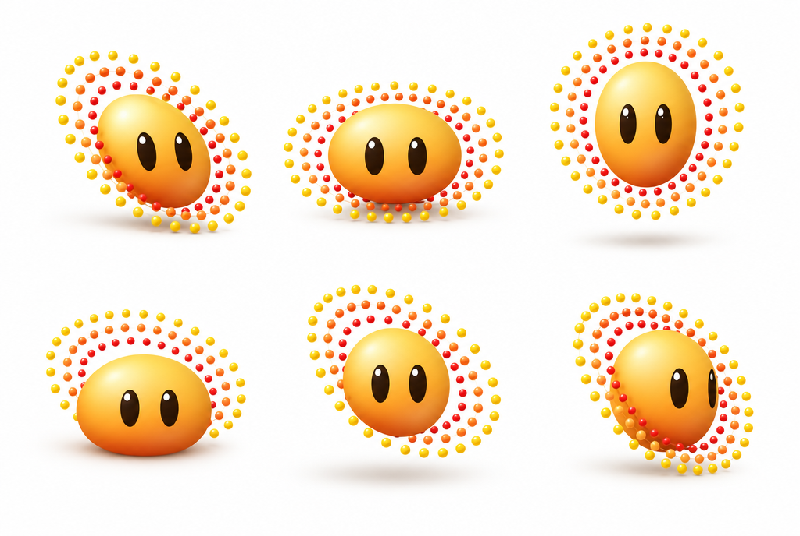

Beem — הדמות של האפליקציה. היא מופיעה, היא לא מדברת — זאת הייתה ההחלטה
הראשונה עליה ועדיין המחייבת ביותר. כדור יחיד, בלי פה, בלי גפיים, עם שתי
עיניים ושלוש טבעות חרוזים שמרחפות סביבו ולא נוגעות בו ולא זו בזו.
שם
Beem · בים
תפקיד
העוזר, ובהמשך הפנים של האפליקציה
צורה
כדור. הצללית זהה מכל זווית
פנים
שתי עיניים בלבד. אין פה, אף, גבות או עפעפיים
גפיים
אין. הוא מתגלגל, מקפץ וצף
קול
אין. הוא מופיע ונעלם
שכבות
ארבע — גוף ושלוש טבעות, שזזות בנפרד
מקור
character/sun-source.png, 1024 פיקסל
חיים במנוחהתנועה 1
פלטה
כל ערך כאן נדגם מהמקור, לא נבחר. שים לב לאחרון בגוף: בתחתית הכדור
הצבע דווקא מתבהר חזרה — זה אור השפה שתופס את הקצה, ולא טעות בגרדיאנט.
גאומטריה
מה
ערך
ביחס לרדיוס הגוף
רדיוס הגוף
238
1.00
הגוף והזוהר מגיעים עד
245
1.03
טבעת פנימית — אדומה
278
1.17
טבעת אמצעית — כתומה
335
1.41
טבעת חיצונית — צהובה
396
1.66
עין אחת
83 × 169
0.35 × 0.71
מרכזי העיניים
x 414 · 589
y 499
מרכז זוג העיניים
501.5
עשרה פיקסל שמאלה ממרכז התמונה
סביב — ארבע זוויות

כאן הדמות שלנו שונה מהותית מהרפרנס. Zeny היא אדם, אז לסיבוב שלה יש
ארבע צלליות שונות. שלנו כדור: המתאר הוא אותו עיגול מכל זווית, ורק
העיניים נעות על פניו — הן נצרות כשהן מתקרבות לשפה במקום להחליק ממנה.
נמדד, לא נטען: 2,841 פיקסלים של עין מלפנים, 1,992 ב‑3/4, 671 בפרופיל
(עין אחת ברוחב 15 פיקסל), ואפס מאחור. ארבעת הכדורים מודדים 192, 188,
186 ו‑191 פיקסל — פיזור של 3.1%.
הבעות
עשר, וכולן עשויות מהעיניים של המקור עצמו. כשהדף נטען, העיניים נחלצות מתוך
sun-body.png פיקסל אחרי פיקסל, ואז זזות על הכדור, מתקצרות בפרספקטיבה
כשהן מתקרבות לשפה, נמעכות או נחתכות. אף פיקסל לא מצויר מחדש. כל כרטיס יוצא
מרגוע, עובר להבעה וחוזר אליו. לחיצה על כרטיס מנגנת אותו בגדול למעלה.
בודק את הדמות מול המקור…
והמקור שהן החליפו

הגיליון מ‑Higgsfield, 1.50 קרדיטים. ההבעה נעשית רק מצורת שתי העיניים, כי אין פה ואין
גבות — ואין עפעפיים: עין עצומה היא העין עצמה שנמעכה לפס, לא עור
שיורד עליה. מימין לשמאל, עליון ואז תחתון: רגוע · עצומות · חושב · שמח ·
קשוב · מרוצה. ומה שלא היה טוב בהן: העיניים כאן גבוהות פי שתיים מאשר במקור —
170 פיקסל מול 338 באותו קנה מידה — והפירוט הוא כמחצית, כי שש דמויות חולקות
תמונה אחת. ושש ההבעות שנחתכו ממנו (beem-f-*.png) התבררו ב־18.10
כרנדר אחר: כדור קטן יותר, 512 פיקסל, עיניים שטוחות. נפתר: עשר
ההבעות למעלה עשויות מהעיניים של המקור ולא מהגיליון הזה.
תנועה — עשר תנועות
כאן הפנים רגועות כל הזמן, כדי שיראו רק את התנועה. כל התנועות רצות על אותה
פיזיקה: קפיץ לגוף, כבידה ורצפה לקפיצות, וכל טבעת מפגרת אחרי הגוף בקצב משלה.
המעיכה מוגבלת ל־30% והמתיחה ל־6%, כדי שהוא יישאר כדור.
עשרה רגעים — הבעה ותנועה יחד
כל רגע קשור למקום אמיתי באפליקציה. הוא רצף של פעולות על אותה דמות ולא
קליפ אפוי, ולכן תגובה יכולה להתחיל מכל מצב, כמו במכונת המצבים של דואלינגו.
רגעים מיוחדים — הטבעות ככלי
כאן הטבעות הן לא רק קישוט שמסתובב, אלא הכלי שלו: טרמפולינה, ג׳ירוסקופ, הילה,
וטבעות שנבנות סביבו כמו טבעות הפעילות של Apple. הכול עשוי רק מהחלקים של Beem,
כלומר הגוף, העיניים, שלוש הטבעות והאור, בלי אביזרים ובלי חלקיקים. כשטבעת נוטה
בתלת־ממד, כל חרוז נשאר כדור עגול: הוא נחלץ מהשכבה כתמונה נפרדת, גדל כשהוא
מתקרב ועובר לפני הגוף או מאחוריו לפי העומק שלו. הקוד יושב ב־beem-special.js,
שעוטף את המנוע בלי לשנות בו שורה.
איך זה עובד
הדמות בנויה מארבע שכבות נפרדות, וזאת לא החלטה גרפית אלא מה שמאפשר לה
לזוז: הגוף לא מסתובב לעולם, כי סיבוב שלו היה הופך את העיניים. הטבעות
מסתובבות בקצבים שונים — 22, 30 ו‑40 שניות בדף הזה — ולכן הן נפרדות ונאספות
במקום לנוע כדיסק מודפס אחד. ושכבת טבעת מכילה חרוזים ותו לא. הגרסה הראשונה חתכה לפי רדיוס, אז כל
טבעת נשאה גם את הערפל שבין החרוזים — וערפל הוא לא סימטרי סביב המרכז,
הוא מחזיק את האור והצל של הרנדר. כשהוא הסתובב מול גוף שלא זז, נראתה קשת
סטטית על הילה נעה. זה היה באג אמיתי. עכשיו כל חרוז מזוהה כגוף מחובר
ומשויך שלם לטבעת שמרכזו הכי קרוב אליה, כי הטבעות ברנדר אינן קונצנטריות
לגמרי ורדיוס קבוע חתך חרוזים לשניים. המספר שמאשר את זה: 26, 26
ו‑27 חרוזים — והמפרט המקורי הוא 26 לטבעת. והבאג שנשאר מהפירוק, ותוקן ב־18.10. כשהחרוזים עברו לשכבות הטבעות, הזוהר
שבשכבת הגוף נשאר עם חור בצורת חרוז בכל מקום שבו ישב חרוז. כשהטבעות עומדות,
כל חרוז מכסה את החור שלו. כשהן מסתובבות, החורים נחשפים כעיגולים בהירים, וזה נראה
כאילו הצבע זולג לרקע. נמדד: ברדיוס הטבעת הפנימית, הכיסוי החציוני סביב המעגל הוא
אפס, כלומר יותר חור מזוהר. עכשיו מחוץ לכדור הזוהר נבנה מחדש, בזמן הטעינה,
מהזוהר עצמו (לכל רדיוס, הערך שלו במקום שבו לא היה חרוז), ושאריות אדומות של חרוזים
בשפה לא נכנסות אליו. הכדור, השפה והפנים לא נגעו, והקבצים ב־character/
לא שונו. ומרכז הכדור הוא לא מרכז התמונה: הוא נמדד על קצה האטימות ב־360 קרניים,
ויצא (508.3, 499.2) ברדיוס 237.6. העיניים, ב־y 499, יושבות בדיוק על קו
המשווה, והזוג מוטה כמה מעלות שמאלה. התפר של הזוהר, נקודת המגע של המעיכה והמבט
על הכדור משתמשים במרכז הזה. ושלוש התנועות שנבחרו — הטבעות מאחרות אחרי הגוף, כל מעגל לכיוון אחר
כשהוא חושב, ותגובה ללחיצה — כולן קוד, לא רנדר, כי כולן תלויות במה
שהמשתמשת עשתה רגע קודם.

החלק החלש בגיליון, ואני לא מסתיר אותו. שש פוזות שהוזמנו, ושתיים
נכונות. מדידת רוחב חלקי גובה בכל תא מול מה שביקשתי: כיווץ 1.21 מול 1.18 ✓,
באוויר 0.80 מול 0.80 ✓, אבל מתגלגל 0.87 מול 1.00, נחיתה 1.43 מול 1.25,
ומרחף 1.14 מול 1.00 — כשביקשתי במפורש ״עגול לגמרי ולא מעוות״. הוא
ביצה ברוב התאים. מה שכן החזיק: אין גפיים באף אחת.
פרטי עיצוב
מה למדנו מנינטנדו, ומה הוחל
הרפרנס הנכון הוא קירבי ולא מריו. מריו הוא אדם; קירבי הוא כדור עם שתי
עיניים אובליות — המבנה המדויק של Beem.
מה עשו שם
מה הוחל על Beem
״מופתע״ הוא היפוך — העין עוברת לעיגול לבן עם אישון שחור קטן,
לא לאותה אליפסה בגודל אחר
הוחל. ״קשוב״ היה הגדלה של 18% ולכן כמעט לא נבדל מ״רגוע״. עכשיו
שדה בהיר, חישוק כהה ואישון. נמדד: 1,030 פיקסלים כהים ו‑5,408 בהירים,
מול 5,053 ו‑2,872 ב״רגוע״
מעיכה היא פגיעה, התמתחות היא מהירות, והכנה זזה לכיוון ההפוך
הוחל. ההתמתחות באה ממהירות, והמעיכה רק מהתאוצה שהמהירות לא
מסבירה — אחרת הקפיץ מועך אותו לאורך כל המעוף. נמדד בעלייה:
1.130, ובנחיתה 0.936. ולמתעורר יש עכשיו שלוש פעימות: מציץ,
צונח אחורה, ואז משוגר
עיניים דו־גוניות — כהה למעלה, קשתית כחולה למטה
נוסה ונדחה. אצלם הגוף ורוד והקשתית כחולה — משפחת גוון אחרת.
אצלנו הגוף כתום וכל קשתית חמה נמוגה לתוכו. שתי ניסיונות, שניהם גרועים
מהעין האחידה
לריחוף שתי שכבות — חיים שקטים תמידיים, ופעולות נדירות
ואקראיות: מסתכל סביב, מתמתח, מפהק, נרדם
עוד לא. ל‑Beem יש רק את הראשונה. זה הפער הגדול ביותר
שהמחקר מצא, והוא נוחת בדיוק ב‑13 רגעי ההמתנה
ומה למדנו מדואלינגו ומהמחקר, 18.10
המקורות מדורגים לפי אמינות: הבלוג של דואלינגו ו־Rive הם מקור ראשון, והשאר אתרי
הדרכה למנפישים. על מריו עצמו לא נמצא מקור של נינטנדו.
ממצא
מה הוחל על Beem
64 חיים שונים במנוחה. ל־Lily של דואלינגו יש 8 תנועות ראש כפול 8 תנועות גוף,
כדי שהמנוחה לא תיראה כמו לולאה
(Rive)
הוחל. בכל רגע מנוחה: מבט לכיוון ולמשך אקראיים, יחד עם אחת מחמש פעולות קטנות או
בלי פעולה. 120 שניות נמדדו: 20 יציאות מבט, אף פעם לא אותו צירוף. זה סוגר את הפער
ש״עוד לא״ שבטבלה למעלה
הוחל. כל שינוי מבט גדול מ־18° מביא איתו מצמוץ, והגוף נשען אחרי העיניים
המתנה נראית כמו מחשבה: "אם יש עיכוב בעיבוד, נראה שהיא שוקלת" (Rive)
הוחל ברגע חושב, שמכסה את הזמן שהמתכנן בונה את היום
תגובה לתשובה: אישור הוא הנהון, בלבול הוא כיווץ וניעור
(Duolingo)
הוחל ברצף נשמר. באופס נבחר עצב ולא בלבול, כי שם לא היא טעתה
לא להגזים בעיניים פעורות, כי הן משנות את האופי (Rive)
הוחל. ״מופתע״ הוא הגדלה של 22% ולא יותר. ההיפוך לעיגול לבן מהטבלה למעלה
לא נכנס, כי הוא דורש לצייר עין חדשה
לא לכל דבר הכנה, אחרת האפליקציה מרגישה איטית
(Game Developer)
הוחל. הכריעה של 110ms רק לפני קפיצות ופרצים
צבעים — אפשרויות
הפלטה של Beem היא סולם אחד של צבע מלא, מאדום לצהוב. הגוון והאור עולים יחד: מה שכהה
יותר קרוב לאדום, ומה שבהיר יותר קרוב לצהוב. שלוש הטבעות הן שלוש תחנות על הסולם: אדום, כתום
וצהוב. נמדד במקור: הטבעת הפנימית בגוון 29, האמצעית ב־44 והחיצונית ב־80, והגוף עובר מ־40 ל־96
ככל שהוא מתבהר. כל צבע כאן הוא אותו סולם, מונח על מקום אחר בגלגל הצבעים: מגוון עמוק
לשכן בהיר שלו. כל פיקסל שומר על האור ועל מלאות הצבע שלו. העיניים לא משתנות.
הקוד יושב ב־beem-colors.js.
בונה את הצבעים…
חי — מגע ושעה
כאן הוא לא מנגן רגע, אלא מגיב. מגע: הוא מסתכל על האצבע. נגיעה מצחיקה
אותו, לחיצה ארוכה היא ליטוף, משיכה לוקחת אותו איתך, וזריקה שולחת אותו לעוף ולקפוץ מהקירות.
חמש נגיעות מהר מדי והוא נעלב, ואז סולח. שעה: בבוקר הוא זורח, ביום הוא חי רגיל,
בערב הוא מאט, ובלילה הוא הופך לירח והחרוזים שלו לכוכבים (הרעיון של אסף): הגוף
מתקרר לכסוף, החרוזים מתלבנים ומנצנצים אחד אחרי השני, והבמה סביבו מחשיכה לשמיים. בבוקר
הירח שוקע כירח, והזריחה מעלה אותו. בין חצות לארבע זה עדיין הלילה של אתמול, כי היום
באפליקציה מסתיים בארבע. רצף: כל יום ברצף מוסיף לו זוהר, ובאבני הדרך (7, 30, 100
ו־365) הוא הופך ל־Beem זהב. הרצף הוא טיוטה: איך בדיוק הוא יעבוד עוד פתוח.
הקוד יושב ב־beem-alive.js וב־beem-moon.js.
מגע
מחכה לך.
שעה 12:00
רצף 0
טיוטה. איך הרצף יעבוד עוד פתוח.
ומה למדנו לרגעים המיוחדים
ממצא
הרגע שיצא ממנו
בלי אביזרים. דואלינגו ויתרו על Duo עם מרשמלו, נר ומבחנה, כי זה "לא התרחב ולא היה
אוניברסלי" (Duolingo)
ג׳ירוסקופ: טבעות מקוננות, כל אחת על ציר אחר
(cssdeck)
ג׳ירוסקופ, עם חרוזים עגולים בתלת־ממד
מה עוד פתוח
1 · הפוזות. 2 מתוך 6, והמספרים למעלה. צריך סבב נוסף. 2 · הדו־גוניות בעיניים לא עברה. אצל קירבי העין כהה למעלה וכחולה
למטה. ניסיתי פעמיים ונכשל — הגוף שלנו כתום, אז כל קשתית חמה יושבת
באותה משפחת גוון וחצי העין נמוג. נשאר צבע אחד. 3 · הדמות עצמה עוד לא באפליקציה, חוץ מהאייקון של dev.
הגיליון הזה הוא דף ולא תמונה, וזאת החלטה ולא נוחות. הרפרנס ששלחת
נוצר כתמונה, והטקסט בו הוא ג׳יבריש — ״A bifling-witted inventor with an
invitable unssetly״. גיליון דמות שאי אפשר לקרוא את ההסברים בו הוא פוסטר.
כאן הטקסט אמיתי, הדמות היא הקובץ עצמו ולא ציור מחדש שלו, וכל מספר נמדד מתוך
character/sun-source.png.